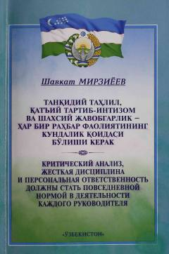

TTPrezidentning davlat boshqaruvi va iqtisodiy rivojlanish bo'yicha muhim ma'ruzasi.
Ushbu kitob O'zbekiston Respublikasi Prezidenti Shavkat Mirziyoyevning 2017-yil 14-yanvarda bo'lib o'tgan Vazirlar Mahkamasining kengaytirilgan majlisidagi ma'ruzasini o'z ichiga oladi. Unda mamlakatni ijtimoiy-iqtisodiy rivojlantirish yakunlari va kelgusi ustuvor vazifalar, shuningdek, rahbarlar faoliyatida intizom va mas'uliyatni oshirish masalalari tahlil qilingan.